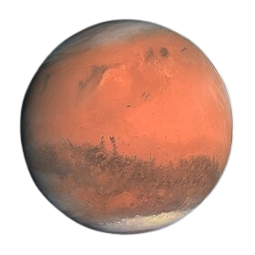
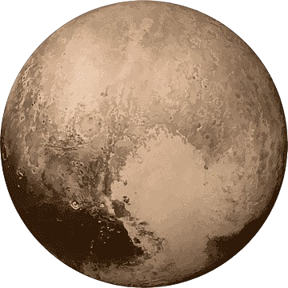
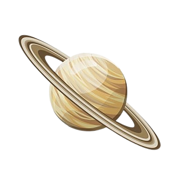

Lua
- Dia 1: Chegada e acomodação no Módulo Lunar de Luxo.
- Dia 2: Caminhada Lunar ao redor do local de pouso da Apollo 11.
- Dia 3: Exploração de cavernas lunares e tubos de lava.
- Dia 4: Observação astronômica e fotografia do céu lunar.
- Dia 5: Visita ao Polo Sul Lunar para estudo de gelo e recursos.
- Dia 6: Experiência de microgravidade em módulos de simulação.
- Dia 7: Retorno à Terra com uma cerimônia de despedida.
R$ 5.000.000

Marte
Atividades:
- Semana 1: Chegada e adaptação no habitat marciano; tour pela base principal.
- Semana 2: Exploração do Monte Olimpo e dos vales de Marineris.
- Semana 3: Excursões em rover pela Cratera Gale e o local de pouso do Perseverance.
- Semana 4: Experiências científicas, cultivo de plantas em ambiente marciano, e análise de amostras de solo.
R$ 50.000.000

Plutão
Atividades:
- Mês 1-2: Viagem de ida com palestras sobre astronomia e história espacial.
- Mês 3: Chegada e exploração do planalto de Sputnik e as montanhas de gelo.
- Mês 4: Observação de Charon, a maior lua de Plutão, e exploração do sistema binário.
- Mês 5: Experiências científicas e coleta de dados para estudos sobre a atmosfera fina de Plutão.
- Mês 6: Retorno à Terra com atividades de relaxamento e preparação para reentrada.
R$ 200.000.000

Saturno
- Mês 1-6: Viagem de ida com treinamento e workshops de ciência planetária.
- Mês 7: Chegada ao sistema de Saturno, com sobrevoo das luas Titã e Encélado.
- Mês 8-10: Estudo das características atmosféricas e climáticas de Titã, incluindo os lagos de metano e etano.
- Mês 11: Exploração dos gêiseres de gelo de Encélado e análise de possíveis sinais de vida.
- Mês 12: Retorno à Terra com sessões de recuperação e integração científica.
R$ 500.000.000